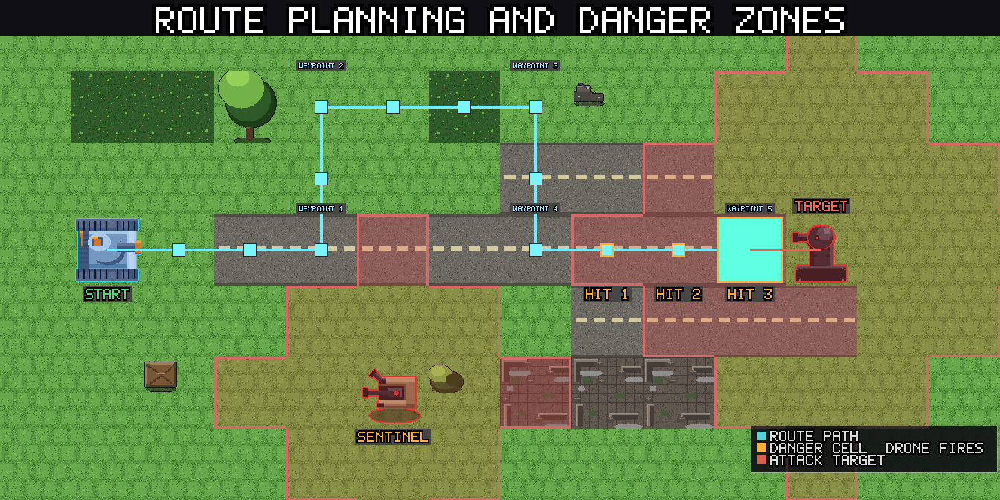

Keyboard controls¶
On desktop, Panzer Island can be played almost entirely from the keyboard. This guide covers what each key does, how the arrow keys change meaning depending on what you are doing, and how to remap everything in the Options menu. Touch devices have no keyboard shortcuts, so none of this applies on Android.
Every shortcut does exactly what the matching on-screen button does. If a button is hidden or grayed out, its key does nothing. You cannot use a shortcut to do something the interface would not let you do with the mouse.
Default keys¶
| Key | Action |
|---|---|
| K | Select Katyusha |
| N | Select Nadeshiko |
| M | Select Maria |
| E or Enter | Execute |
| Q | Add to queue |
| C | Cancel |
| Z | Undo (Easy difficulty) |
| Backspace | Remove the last queued action |
| I | Open unit details |
| L | Fire a limit break |
| T or Tab | Lock the next reachable drone as the attack target, or pick a stage on the world map (Shift goes back) |
| + | Zoom in |
| - | Zoom out |
| 0 | Reset zoom |
| Arrow keys or W A S D | Step a route, aim, browse, or page chapters (see below) |
| Esc | Pause menu |
| F11 | Toggle fullscreen |
Esc, F11, Enter, Tab, and the numpad +, -, and 0 keys are fixed. You cannot remap them, and you cannot assign them to another action. The numpad keys work as extra zoom keys alongside the main ones.
Planning a move with the keyboard¶
A full move can be done without touching the mouse.
- Press K, N, or M to select a unit.
- Press an arrow key to take the first step of the route. Each press moves the route one cell in that direction.
- Keep pressing arrow keys to extend the route. The route preview updates after every step, so you can watch the predicted damage as you go.
- Press E or Enter to execute the route.
To shorten a route, press the arrow key that points back at the previous cell. Stepping back onto the previous waypoint removes the last step. Stepping back off the first step clears the route and leaves the unit selected.
To attack, step the route into a cell that holds a drone. That drone becomes the attack target, the same way it does when you drag a path with the mouse. For drones that are further away, see the next section.
Press C to cancel a route in progress. If you have a unit selected but have not started a route, C deselects it.
Press I with a unit selected to open its details panel.
Press L to fire a limit break. Katyusha's fires at once. Nadeshiko's and Maria's ask you to aim first (see "Aiming a limit break" below). With a unit selected, it fires that unit's limit break, and only when its gauge is full. With nothing selected, it fires the first ready one in the order Katyusha, Nadeshiko, Maria. It works like pressing the glowing gauge: the usual confirmation appears first, and E or Enter accepts it while C cancels. The key does nothing while the gauge is not ready, during enemy animations, or in modes where the gauge is hidden.

Aiming at distant drones¶
Some drones cannot be reached by walking. Maria only moves on water, for example, so a drone on land is out of her path, even when she can hit it from the shore. The keyboard has two ways to target these drones.
The aiming cursor¶
When you press an arrow key toward a cell your unit cannot walk to, the route stays where it is and a yellow aiming cursor appears on that cell. It does not move the unit or change the route.
- Keep pressing the arrow keys to move the cursor. It can cross land, mountains, and water alike, as long as the cell is within attack range of somewhere your unit can stand. Maria, with a range of 3, can aim at land tiles up to three cells from the water she can reach.
- When the cursor lands on a drone, that drone is locked in as the attack target, exactly as if you had clicked it. The route to a firing position is planned for you. You can then press E to execute, or keep extending the route.
- To drop the cursor, step it back onto the cell where it started, or press C. A second C then cancels the route as usual.
The locked drone also gets the same range outline and stat tooltip you see when hovering with the mouse.
Cycling targets¶
Press T or Tab to lock the nearest drone your unit can reach. Press it again for the next one, and the list wraps around. Hold Shift to go backwards. Drones that cannot be reached are skipped.
If no unit is selected, T or Tab first selects Katyusha, then locks the nearest drone she can reach. If Katyusha is not available, it falls back to Nadeshiko, then Maria.
Each press that needs the unit to move first plans the firing position for you. The next press swaps that position for the new target instead of adding another step.
Aiming a limit break¶
After you confirm Nadeshiko's or Maria's limit break, the same keys aim it. The cursor starts on the unit, and each arrow or W A S D press moves it one cell, across any terrain, including water, mountains, and cliffs that the unit itself could never cross.
- When the cursor lands on a cell the break can hit, that cell becomes the previewed target and the preview appears, just as if you had clicked it. If the unit would have to move first to reach it, the move is planned for you.
- Cells nothing can reach only move the cursor, so you can steer past them to the target you want.
- Keep moving the cursor to change the target. The preview follows it, and stepping back onto an earlier target previews it again instead of firing.
- Press E or Enter to fire at the previewed target. C backs out one step at a time, the same as the Cancel button.
Zooming¶
The + and - keys zoom the stage camera in and out, one mouse-wheel step per press, and they repeat while held. 0 resets the zoom to the default view. The numpad +, -, and 0 work too. On keyboards where + or - sit on different keys, the character itself is recognized, so the usual keys work either way.
Like the mouse wheel, the zoom keys pause during enemy animations and while a popup is open.
The queue¶
The queue lets you plan actions for several units and run them in one go.
- Q adds the current route to the queue.
- E or Enter runs the queued actions. When a route is waiting for confirmation, E confirms that route first.
- Backspace removes the most recently queued action.
- C cancels the queue before it runs.
- With nothing selected, the Left and Right arrow keys browse through the queued actions, the same as the < and > buttons.
Arrow keys by context¶
The arrow keys do different things depending on what is on screen. W, A, S, and D are a second set of arrows, so A and D mean Left and Right, and W and S mean Up and Down, everywhere in this guide. Each of the four can be remapped separately from its arrow key, and the arrows keep working either way.
| Situation | Left and Right | Up and Down |
|---|---|---|
| Aiming a limit break | Move the cursor one cell | Move the cursor one cell |
| A unit is selected | Step the route one cell, or move the aiming cursor | Step the route one cell, or move the aiming cursor |
| Nothing selected, queue has actions | Browse queued actions | No effect |
| Undo browser is open | Step through checkpoints | No effect |
| World map | Previous and next chapter | Previous and next mode or difficulty |
On the world map, Left and Right page through chapters exactly like the chapter buttons, including the same locks. A chapter you have not unlocked stays out of reach. Up and Down move through the mode and difficulty selector one row at a time, skipping locked rows and stopping at the ends. Any confirmation dialog that clicking would show appears here too.
Starting a stage¶
The world map can be driven from the keyboard too.
- Press T or Tab to select a stage. A pulsing cyan frame marks it. The first press picks the first unlocked stage you have not cleared in the current mode, which is usually the one you want to play next. If you have cleared everything, it starts at stage 1.
- Press T or Tab again to move to the next unlocked stage, in stage number order from 1 to 10. After the last one it wraps back to the first. Shift goes the other way. Locked stages are skipped, so if only one stage is unlocked, it stays selected.
- Press E or Enter to start the selected stage. It behaves exactly like clicking the stage, including any confirmation or leaderboard screen that appears first.
Changing chapter, mode, or difficulty redraws the map and clears the selection. The map keys pause while a popup is open.
Undo¶
Undo is available on Easy difficulty. See the FAQ for how checkpoints work.
- Press Z to open the undo browser.
- Press Left and Right to step through earlier checkpoints.
- Press Z again, E, or Enter to rewind to the checkpoint you picked.
- Press C to leave the browser without changing anything.
While the browser is open, these are the only keys that act. Unit selection and route keys wait until you leave it.
Popups and dialogs¶
Popups take the same keys, so you can keep your hands on the keyboard.
- E or Enter presses the popup's OK, Yes, or Continue button.
- C closes the popup, the same as Esc. On a yes or no question, C answers No.
This covers tutorial popups, confirmation dialogs, level-up choices, memory fragments, and the stage and chapter result screens. Popups that offer several equal choices have no single OK button, so E does nothing there. When you type into a text field, such as your player name, the keys type normally and never trigger a shortcut.
Remapping keys¶
- Open Options.
- Choose Controls.
- Click the key button next to the action you want to change. It reads "Press a key...".
- Press the new key.
A few rules apply.
- Esc cancels the capture without changing anything.
- F11, Enter, Tab, the numpad +, -, and 0, and modifier keys on their own (Shift, Ctrl, Alt, Meta, Caps Lock) cannot be assigned. The page tells you when a key is refused.
- If the key you press is already used by another action, the two actions swap keys. The page names the action that moved, so nothing is ever left without a key by accident.
- Reset Keys to Defaults restores every shortcut at once.
Your choices are saved with your other settings.
Keys are stored by physical position, not by the letter printed on the keycap. If you play on a QWERTZ or AZERTY keyboard, the defaults stay under the same fingers as on a QWERTY keyboard, and the Controls page shows the label from your own layout.
Quick reference¶
- K, N, M select a unit. I opens its details. L fires a ready limit break.
- Arrow keys step the route. Step backward to undo a step.
- Arrow keys toward unwalkable cells start the aiming cursor. Land it on a drone to lock the target.
- T or Tab locks the next reachable drone. Shift goes back.
- E or Enter executes. C cancels. Q queues.
- Z opens undo on Easy. Arrow keys browse. Z or E confirms.
- On the world map, T or Tab picks a stage and E or Enter starts it.
- +, -, and 0 zoom in, zoom out, and reset.
- E and C also answer popups.
- W A S D work like the arrow keys.
- Remap everything except Esc, F11, Enter, Tab, and the numpad zoom keys under Controls in Options.
Other guides¶
Getting Started The core ideas you need for Chapter 1: reactive movement, route previews, and spreading damage.
Advanced Tactics Reading multi-step routes and planning actions across several units.
Challenge Mode A score-based replay of any cleared stage, where fast and precise input pays off.
Play Panzer Island now on Steam, Google Play, or in your browser on itch.io. You can also try the combat-focused Reddit game. Or read the webnovel.